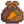
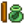

Golden Mystery Box
This page or section contains unmarked spoilers from update 1.6 of Stardew Valley. Players may want to avoid or be cautious toward reading this article/section. |
| Golden Mystery Box | |
| A blacksmith can open this for you. Who knows what might be inside? | |
| Information | |
| Source | Fishing Treasure Chests • Mining • Monsters • Panning • Trees |
Golden Mystery Boxes are unlocked after receiving the Foraging Mastery. They are similar to normal Mystery Boxes. They can be obtained in a variety of ways after receiving the mastery.
Golden Mystery Boxes can be cracked by Clint in the Blacksmith shop for  25g, similar to Geodes. However, unlike Geodes, they cannot be broken open using a Geode Crusher.
25g, similar to Geodes. However, unlike Geodes, they cannot be broken open using a Geode Crusher.
Locations
The following table lists the different actions that can spawn a Golden Mystery Box.
The "Chance" column below indicates the probabilities that the game will attempt to spawn a Golden Mystery Box. When such an attempt is made, the game performs a further check to see if it succeeds. If the player does not have Foraging Mastery, the check will fail. Otherwise, the probability of succeeding is 75% if the player does not have the power obtained from the Book of Mysteries and 95% if they do.[1]
Also note that the chances of obtaining Golden Mystery Boxes from some of the sources depends on and increases with higher daily luck, and in some cases, with Luck Buffs.
| Activity | Chance |
|---|---|
| Fishing Treasure Chests [2] | 9-17% (dependent on daily luck) |
| Golden Fishing Treasure Chests [2] | 12-21% (dependent on daily luck) |
| Panning [3] | 5% |
| Shaking trees with seeds [4] | 3% |
| Monsters [5] | 0.01 + (Daily Luck / 10) + (Luck Buffs / 125)
|
| Breaking containers in the Mines, Skull Cavern, and Volcano Dungeon [6] | 0.0081 + (Daily Luck / 15)
|
| Chopping trees (Each Axe hit) [7] | 0.5% |
Contents
| Article Stub
This article is marked as a stub for the following reason:
|
Below is a list of possible contents.
| Items | |||
|---|---|---|---|
|  Carrot Seeds (8) | |||
|  Bean Starter (20) | |||
Tailoring
Golden Mystery Box is not used in any tailoring. It can be used in dyeing, serving as a yellow dye at the dye pots, located in Emily's and Haley's house, 2 Willow Lane.
References
- ↑ See Utility::rollMysteryBox in the game code.
- ↑ 2.0 2.1 See FishingRod::openTreasureMenuEndFunction in the game code.
- ↑ See Pan::getPanItems in the game code.
- ↑ See tree::Shake in the game code.
- ↑ See GameLocation::monsterDrop in the game code.
- ↑ See BreakableContainer::releaseContents in the game code.
- ↑ See tree::performToolAction in the game code.
History
- 1.6: Introduced.